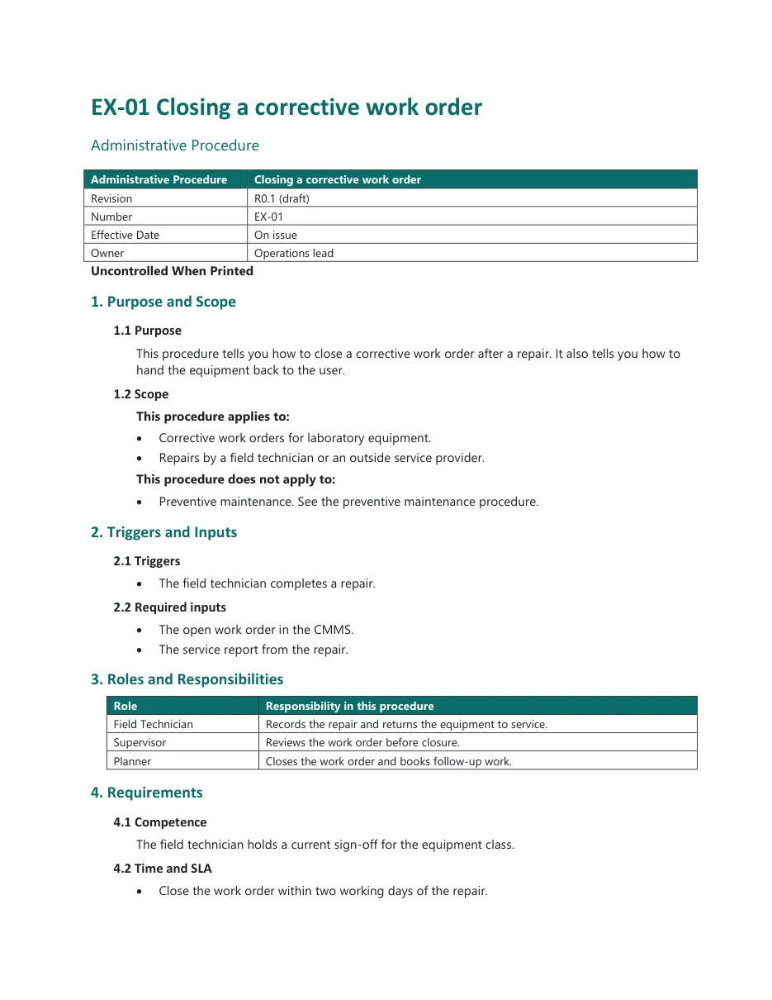
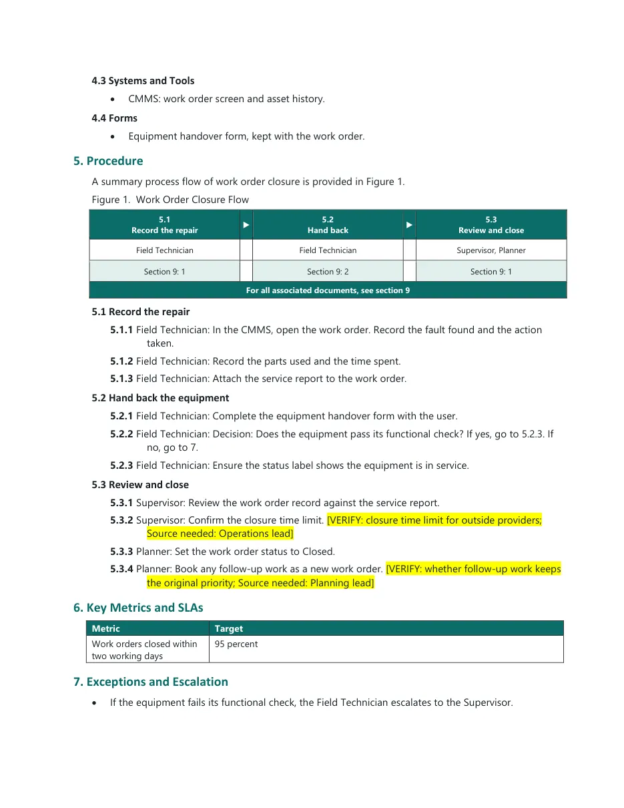
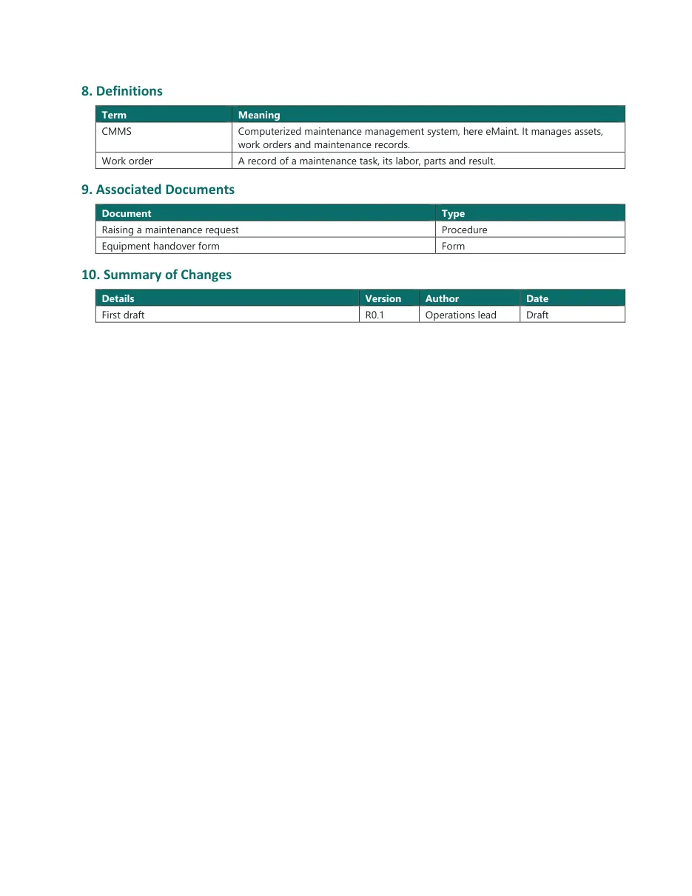

1 · Markdown masterEX-01_Closing a corrective work order.md
# EX-01 Closing a corrective work order | | | |---|---| | Administrative Procedure | Closing a corrective work order | | Revision | R0.1 (draft) | | Number | EX-01 | | Effective Date | On issue | | Owner | Operations lead | Uncontrolled When Printed ## 1. Purpose and Scope ### 1.1 Purpose This procedure tells you how to close a corrective work order after a repair. It also tells you how to hand the equipment back to the user. ### 1.2 Scope This procedure applies to: - Corrective work orders for laboratory equipment. - Repairs by a field technician or an outside service provider. This procedure does not apply to: - Preventive maintenance. See the preventive maintenance procedure. ## 2. Triggers and Inputs ### 2.1 Triggers - The field technician completes a repair. ### 2.2 Required inputs - The open work order in the CMMS. - The service report from the repair. ## 3. Roles and Responsibilities | Role | Responsibility in this procedure | |---|---| | Field Technician | Records the repair and returns the equipment to service. | | Supervisor | Reviews the work order before closure. | | Planner | Closes the work order and books follow-up work. | ## 4. Requirements ### 4.1 Competence The field technician holds a current sign-off for the equipment class. ### 4.2 Time and SLA - Close the work order within two working days of the repair. ### 4.3 Systems and Tools - CMMS: work order screen and asset history. ### 4.4 Forms - Equipment handover form, kept with the work order. ## 5. Procedure A summary process flow of work order closure is provided in Figure 1. Figure 1. Work Order Closure Flow | 5.1 Record the repair | ▶ | 5.2 Hand back | ▶ | 5.3 Review and close | |---|---|---|---|---| | Field Technician | | Field Technician | | Supervisor, Planner | | Section 9: 1 | | Section 9: 2 | | Section 9: 1 | | For all associated documents, see section 9 | | | | | ### 5.1 Record the repair 5.1.1 Field Technician: In the CMMS, open the work order. Record the fault found and the action taken. 5.1.2 Field Technician: Record the parts used and the time spent. 5.1.3 Field Technician: Attach the service report to the work order. ### 5.2 Hand back the equipment 5.2.1 Field Technician: Complete the equipment handover form with the user. 5.2.2 Field Technician: Decision: Does the equipment pass its functional check? If yes, go to 5.2.3. If no, go to 7. 5.2.3 Field Technician: Ensure the status label shows the equipment is in service. ### 5.3 Review and close 5.3.1 Supervisor: Review the work order record against the service report. 5.3.2 Supervisor: Confirm the closure time limit. [VERIFY: closure time limit for outside providers; Source needed: Operations lead] 5.3.3 Planner: Set the work order status to Closed. 5.3.4 Planner: Book any follow-up work as a new work order. [VERIFY: whether follow-up work keeps the original priority; Source needed: Planning lead] ## 6. Key Metrics and SLAs | Metric | Target | |---|---| | Work orders closed within two working days | 95 percent | ## 7. Exceptions and Escalation - If the equipment fails its functional check, the Field Technician escalates to the Supervisor. ## 8. Definitions | Term | Meaning | |---|---| | CMMS | Computerized maintenance management system, here eMaint. It manages assets, work orders and maintenance records. | | Work order | A record of a maintenance task, its labor, parts and result. | ## 9. Associated Documents | Document | Type | |---|---| | [Raising a maintenance request](https://example.com/library/raising-a-maintenance-request) | Procedure | | [Equipment handover form](https://example.com/library/equipment-handover-form) | Form | ## 10. Summary of Changes | Details | Version | Author | Date | |---|---|---|---| | First draft | R0.1 | Operations lead | Draft |
2 · Checker reportcheck_docs.py
EX-01_Closing a corrective work order.docx 2 FAIL PASS appendix PASS phase PASS numbering PASS roles PASS decisions PASS cmms PASS clients FAIL banned ensuredeliberate: a banned word in step 5.2.3 PASS punctuation PASS spelling PASS sentences 0 over 20 words (enumerations excluded where a colon precedes the list) PASS links FAIL verify 2 markers; not in register: whether follow-up work keeps the original prioritydeliberate: the step 5.3.4 marker has no gap-register row WARN pages LibreOffice not available; check the PDF page count by hand
3 · Rendered pagebuild_docs.py



Every AI session starts by reading this pack, in this order. It takes about ten minutes, and the session logs the pack version it worked to.
| Read | File | What you get |
|---|---|---|
| 1 | 01_Framework_Summary.md | Document hierarchy, families and the numbering convention |
| 2 | 02_Working_Preferences.md | Language, framing, template, what to leave out |
| 3 | 03_Writing_Rules.md | How sentences are written; banned words |
| 4 | 04_Role_Vocabulary.md | The only role names allowed, and how to map source names to them |
| 5 | 05_Glossary.csv | Controlled definitions. Copy from here; never write your own |
| 6 | 06_Document_Structures.md | Skeletons for each document type, header blocks, page budgets, table formats |
| 7 | 07_Reviewer_Checklist.md | The gate every document passes before issue. Write to pass it |
| 8 | 08_Known_Sources_Map.md | Where the raw material lives |
What a session may not do
- Invent content. If a source does not say it, mark it
[VERIFY: what; Source needed: who]and log it in the gap register. - Use client names or contract terms in procedure text.
- Move, rename or delete files, or issue a document. Issue is a human act.
- Decide a reviewer disposition, sign off a document, or close a VERIFY item without a named person's answer.
- Skip the register. A document that is not in the register does not exist.